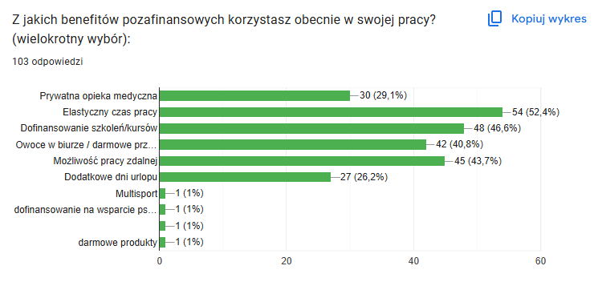
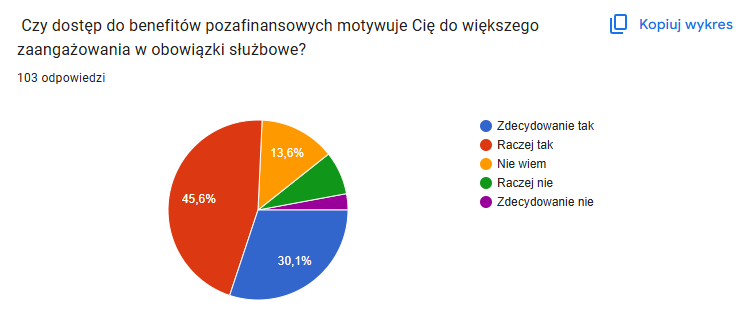
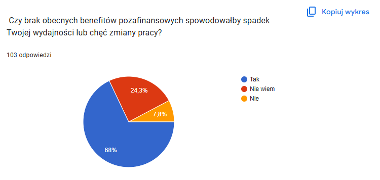
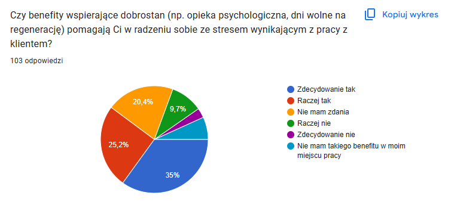
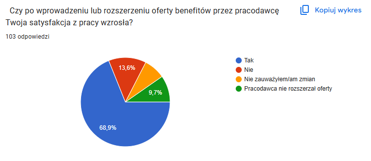

Zapraszam do zapoznania się ze stroną poświęconą badaniu na temat "Wpływu pozafinansowych benefitów na produktywność pracownków w sektorze usług".
Ta strona poświęcona jest projektowi badawczemu realizowanemu w ramach pracy licencjackiej na Uniwersytecie Vizja. Głównym celem projektu było zbadanie, jaki wpływ mają świadczenia pozafinansowe na produktywność i decyzje zawodowe pracowników. Punktem wyjścia było pytanie, czy pracownicy traktują takie świadczenia jako dodatek bez większego znaczenia, czy jako czynnik realnie wpływający na to, gdzie i jak chcą pracować.
Świadczenia pozafinansowe to wszystkie elementy oferty pracodawcy, które nie są bezpośrednio wypłacane w gotówce, a mimo to mają wartość dla pracownika. Najczęściej obejmują to:
Aby to zweryfikować, przeprowadziłem badanie ankietowe wśród pracowników firm z różnych branż — m.in. handlu, ubezpieczeń i rozrywki. Wyniki potwierdziły postawioną tezę: świadczenia pozafinansowe mają bardzo istotny wpływ na decyzje zawodowe, a dla części pracowników bywają równie ważne, co samo wynagrodzenie lub a czasem nawet ważniejsze. Poniżej przedstawiam szczegółowe wnioski z badania oraz rekomendacje dla pracodawców.
Świadczenia pozafinansowe mają bardzo istotny wpływ na to, czy kandydat przyjmie daną ofertę pracy.
Część respondentów zadeklarowała, że wybrałaby ofertę z niższym wynagrodzeniem, jeśli oferowałaby lepszy pakiet benefitów pozafinansowych.
Benefity pozafinansowe realnie wpływają na motywację do pracy w ocenie badanych.
Najbardziej cenionymi benefitami okazały się praca zdalna oraz dofinansowanie transportu publicznego lub paliwa.
Poziom oferowanych benefitów może przekładać się na ilość i jakość wykonywanej pracy, co ma znaczenie dla całej organizacji.
Wyniki tego badania pokazują wyraźnie: świadczenia pozafinansowe to nie dodatek "na papierze", tylko realny argument, który waży w decyzji o przyjęciu oferty pracy i w codziennej motywacji do jej wykonywania. Jeśli budżet na podwyżki jest ograniczony, warto rozważyć te formy wsparcia jako sposób na zwiększenie atrakcyjności oferty bez zwiększania kosztów wynagrodzeń.
Na podstawie zebranych odpowiedzi można sformułować szereg konkretnych rekomendacji dla pracodawców z sektora usług. Przede wszystkim warto zwiększyć poziom autonomii i samodzielności pracowników, ponieważ to właśnie ten czynnik został oceniony jako najważniejszy w całym badaniu, ze średnią 4,17 na 5, najwyższą spośród dziewięciu ocenianych kategorii benefitów. W praktyce oznacza to ograniczenie mikrozarządzania, przekazanie pracownikom większej odpowiedzialności za sposób realizacji zadań oraz wprowadzenie jasno określonych celów zamiast szczegółowych instrukcji krok po kroku. Równie istotne jest budowanie dobrej atmosfery i relacji w zespole, drugiego najwyżej ocenianego czynnika, ze średnią 3,93 na 5, który okazał się szczególnie ważny dla pracowników o dłuższym stażu, przekraczającym trzy lata, u których jego znaczenie systematycznie rośnie. Rekomendowane jest w tym zakresie organizowanie regularnych spotkań integracyjnych, inwestowanie w kompetencje menedżerskie kadry kierowniczej w obszarze budowania relacji oraz tworzenie przestrzeni sprzyjającej nieformalnej komunikacji w zespole. Warto również zadbać o tworzenie realnych ścieżek awansu, ponieważ możliwość awansu oceniono na 3,90 na 5, a jej znaczenie, podobnie jak w przypadku atmosfery, rośnie wraz ze stażem pracy. Pracodawcy powinni więc wdrożyć przejrzyste i jawne kryteria awansu oraz prowadzić regularne rozmowy rozwojowe, tak aby pracownik widział konkretną perspektywę kariery w firmie, a nie tylko w niej pracował. Kolejną rekomendacją jest wprowadzenie systemu bieżącego uznania i pochwał, ponieważ uznanie ze strony przełożonego, ocenione na 3,85 na 5, jest benefitem stosunkowo tanim we wdrożeniu, a jednocześnie bardzo skutecznym motywacyjnie. W praktyce oznacza to konkretne informowanie pracownika o dobrze wykonanej pracy, publiczne docenianie osiągnięć zespołu oraz wdrożenie prostego systemu nagradzania wyróżniających się osób. Nie należy przy tym rezygnować z elastycznego czasu pracy oraz możliwości pracy zdalnej lub hybrydowej, mimo że w rankingu ważności benefity te wypadły relatywnie niżej, ze średnimi odpowiednio 3,50 i 3,43 na 5. Są one bowiem obecnie najczęściej oferowanymi benefitami, wskazywanymi przez 52 i 44 procent respondentów, i mają bezpośredni związek z efektywnością pracy, skoro aż 64 procent badanych deklaruje wyższą wydajność w dni pracy zdalnej lub hybrydowej. Powinny więc funkcjonować jako fundament, na którym pracodawcy budują benefity wyższego rzędu, takie jak autonomia czy relacje w zespole. Warto również rozważyć rozszerzenie wsparcia psychologicznego, które jest szczególnie istotne w usługach wiążących się z bezpośrednim kontaktem z klientem, skoro 60,2 procent respondentów wskazało, że tego typu benefity pomagają im radzić sobie ze stresem zawodowym. W tym celu pracodawcy mogliby zapewnić dostęp do konsultacji psychologicznych w ramach pakietu benefitów oraz organizować szkolenia z zarządzania stresem dla pracowników pierwszej linii kontaktu z klientem. Istotne jest także lepsze dopasowanie oferty benefitowej do rzeczywistych oczekiwań pracowników, ponieważ mimo że 90,3 procent respondentów czuje się dobrze poinformowanych o dostępnych benefitach, jedynie 57,3 procent uznaje, że pracodawca w pełni spełnia ich oczekiwania w tym zakresie. Rekomendowane jest zatem prowadzenie cyklicznych, krótkich badań preferencji pracowników, na przykład raz w roku, pozwalających na bieżąco weryfikować, czy oferta nadąża za zmieniającymi się potrzebami zespołu, zwłaszcza w miarę wzrostu stażu pracowników. Na koniec warto podkreślić, że benefity pozafinansowe powinny być traktowane jako narzędzie retencji, a nie wyłącznie rekrutacji, skoro aż 83,5 procent respondentów przyznało, że brak satysfakcjonujących benefitów skłoniłby ich do zmiany pracy. Oznacza to konieczność monitorowania oferty benefitowej konkurencji oraz jej regularnej aktualizacji, tak aby benefity nie tylko przyciągały nowych pracowników, ale również skutecznie zatrzymywały tych już zatrudnionych.
Poniżej dodatkowe rekomendacje
Wprowadź lub rozszerz opcje pracy zdalnej i hybrydowej — to najwyżej ceniony benefit w badaniu.
Rozważ dopłaty do transportu publicznego lub paliwa jako niedrogi, wysoko ceniony benefit.
Podkreślaj wartość pakietu pozafinansowego już na etapie oferty — realnie wpływa na decyzję kandydatów.
Regularnie badaj, czy oferowane benefity wciąż odpowiadają oczekiwaniom zespołu.
Przy ograniczonym budżecie płacowym traktuj benefity pozafinansowe jako narzędzie utrzymania pracowników.




